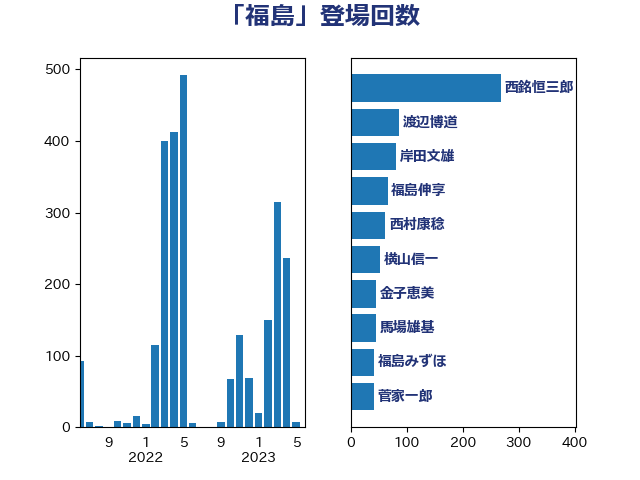

単語「福島」

| 西銘恒三郎 | 自由民主党 | 268 回 |
| 渡辺博道 | 自由民主党 | 87 回 |
| 岸田文雄 | 自由民主党 | 81 回 |
| 福島伸享 | 無所属 | 66 回 |
| 西村康稔 | 自由民主党 | 62 回 |
| 横山信一 | 公明党 | 52 回 |
| 金子恵美 | 立憲民主党 | 46 回 |
| 馬場雄基 | 立憲民主党 | 45 回 |
| 福島みずほ | 社会民主党 | 42 回 |
| 菅家一郎 | 自由民主党 | 41 回 |
| 高橋千鶴子 | 日本共産党 | 40 回 |
| 庄子賢一 | 公明党 | 37 回 |
| 笠井亮 | 日本共産党 | 33 回 |
| 西村明宏 | 自由民主党 | 30 回 |
| 若松謙維 | 公明党 | 30 回 |
| 芳賀道也 | 国民民主党 | 30 回 |
| 小熊慎司 | 立憲民主党 | 30 回 |
| 萩生田光一 | 自由民主党 | 29 回 |
| 空本誠喜 | 日本維新の会 | 28 回 |
| 進藤金日子 | 自由民主党 | 27 回 |
| 足立康史 | 日本維新の会 | 27 回 |
| 新妻秀規 | 公明党 | 27 回 |
| 梅村みずほ | 日本維新の会 | 26 回 |
| 山口壯 | 自由民主党 | 25 回 |
| 荒井優 | 立憲民主党 | 24 回 |
| 秋葉賢也 | 自由民主党 | 22 回 |
| 神谷裕 | 立憲民主党 | 21 回 |
| 岩渕友 | 日本共産党 | 21 回 |
| 早坂敦 | 日本維新の会 | 20 回 |
| 亀岡偉民 | 自由民主党 | 20 回 |
| 阿部知子 | 立憲民主党 | 19 回 |
| 竹谷とし子 | 公明党 | 18 回 |
| 斉藤鉄夫 | 公明党 | 18 回 |
| 國重徹 | 公明党 | 18 回 |
| 里見隆治 | 公明党 | 17 回 |
| 鬼木誠 | 立憲民主党 | 14 回 |
| 野村哲郎 | 自由民主党 | 14 回 |
| 石井正弘 | 自由民主党 | 14 回 |
| 末松信介 | 自由民主党 | 14 回 |
| 長友慎治 | 国民民主党 | 13 回 |
| 青島健太 | 日本維新の会 | 12 回 |
| 鈴木俊一 | 自由民主党 | 12 回 |
| 谷公一 | 自由民主党 | 12 回 |
| 木原稔 | 自由民主党 | 12 回 |
| 伊藤忠彦 | 自由民主党 | 12 回 |
| 中根一幸 | 自由民主党 | 12 回 |
| 一谷勇一郎 | 日本維新の会 | 12 回 |
| 玄葉光一郎 | 立憲民主党 | 11 回 |
| 小泉進次郎 | 自由民主党 | 11 回 |
| 上杉謙太郎 | 自由民主党 | 11 回 |
| 細田博之 | 自由民主党 | 10 回 |
| 柳ヶ瀬裕文 | 日本維新の会 | 10 回 |
| 山本太郎 | れいわ新選組 | 10 回 |
| 奥下剛光 | 日本維新の会 | 10 回 |
| 長島昭久 | 自由民主党 | 9 回 |
| 近藤昭一 | 立憲民主党 | 9 回 |
| 赤羽一嘉 | 公明党 | 9 回 |
| 竹詰仁 | 国民民主党 | 9 回 |
| 福山哲郎 | 立憲民主党 | 9 回 |
| 冨樫博之 | 自由民主党 | 9 回 |
| 中野洋昌 | 公明党 | 9 回 |
| 青山繁晴 | 自由民主党 | 8 回 |
| 紙智子 | 日本共産党 | 8 回 |
| 石川大我 | 立憲民主党 | 8 回 |
| 石井章 | 日本維新の会 | 8 回 |
| 河西宏一 | 公明党 | 8 回 |
| 山崎誠 | 立憲民主党 | 8 回 |
| 尾辻秀久 | 無所属 | 8 回 |
| 音喜多駿 | 日本維新の会 | 7 回 |
| 石井苗子 | 日本維新の会 | 7 回 |
| 枝野幸男 | 立憲民主党 | 7 回 |
| 市村浩一郎 | 日本維新の会 | 7 回 |
| 石垣のりこ | 立憲民主党 | 6 回 |
| 横沢高徳 | 立憲民主党 | 6 回 |
| 林芳正 | 自由民主党 | 6 回 |
| 松本剛明 | 自由民主党 | 6 回 |
| 徳永エリ | 立憲民主党 | 6 回 |
| 川田龍平 | 立憲民主党 | 6 回 |
| 嘉田由紀子 | 無所属 | 6 回 |
| 赤木正幸 | 日本維新の会 | 5 回 |
| 竹内真二 | 公明党 | 5 回 |
| 石川昭政 | 自由民主党 | 5 回 |
| 田嶋要 | 立憲民主党 | 5 回 |
| 清水貴之 | 日本維新の会 | 5 回 |
| 永岡桂子 | 自由民主党 | 5 回 |
| 岸真紀子 | 立憲民主党 | 5 回 |
| 岩田和親 | 自由民主党 | 5 回 |
| 小野田紀美 | 自由民主党 | 5 回 |
| 小野泰輔 | 日本維新の会 | 5 回 |
| 小島敏文 | 自由民主党 | 5 回 |
| 安江伸夫 | 公明党 | 5 回 |
| 佐藤啓 | 自由民主党 | 5 回 |
| 中曽根弘文 | 自由民主党 | 5 回 |
| 上月良祐 | 自由民主党 | 5 回 |
| 長浜博行 | 無所属 | 4 回 |
| 野田国義 | 立憲民主党 | 4 回 |
| 舩後靖彦 | れいわ新選組 | 4 回 |
| 田名部匡代 | 立憲民主党 | 4 回 |
| 熊谷裕人 | 立憲民主党 | 4 回 |
| 漆間譲司 | 日本維新の会 | 4 回 |
| 水岡俊一 | 立憲民主党 | 4 回 |
| 櫛渕万里 | れいわ新選組 | 4 回 |
| 根本匠 | 自由民主党 | 4 回 |
| 広瀬めぐみ | 自由民主党 | 4 回 |
| 塩田博昭 | 公明党 | 4 回 |
| 務台俊介 | 自由民主党 | 4 回 |
| 倉林明子 | 日本共産党 | 4 回 |
| 青山大人 | 立憲民主党 | 3 回 |
| 階猛 | 立憲民主党 | 3 回 |
| 鈴木宗男 | 日本維新の会 | 3 回 |
| 田村智子 | 日本共産党 | 3 回 |
| 田村まみ | 国民民主党 | 3 回 |
| 森まさこ | 自由民主党 | 3 回 |
| 松村祥史 | 自由民主党 | 3 回 |
| 松本洋平 | 自由民主党 | 3 回 |
| 杉尾秀哉 | 立憲民主党 | 3 回 |
| 杉久武 | 公明党 | 3 回 |
| 平林晃 | 公明党 | 3 回 |
| 岡本あき子 | 立憲民主党 | 3 回 |
| 山本順三 | 自由民主党 | 3 回 |
| 寺田静 | 無所属 | 3 回 |
| 坂井学 | 自由民主党 | 3 回 |
| 古川禎久 | 自由民主党 | 3 回 |
| 古川元久 | 国民民主党 | 3 回 |
| 佐々木さやか | 公明党 | 3 回 |
| 伴野豊 | 立憲民主党 | 3 回 |
| たがや亮 | れいわ新選組 | 3 回 |
| 齋藤健 | 自由民主党 | 2 回 |
| 鷲尾英一郎 | 自由民主党 | 2 回 |
| 鰐淵洋子 | 公明党 | 2 回 |
| 高橋はるみ | 自由民主党 | 2 回 |
| 高木陽介 | 公明党 | 2 回 |
| 関口昌一 | 自由民主党 | 2 回 |
| 金城泰邦 | 公明党 | 2 回 |
| 野田佳彦 | 立憲民主党 | 2 回 |
| 辻元清美 | 立憲民主党 | 2 回 |
| 谷田川元 | 立憲民主党 | 2 回 |
| 西田昭二 | 自由民主党 | 2 回 |
| 藤岡隆雄 | 立憲民主党 | 2 回 |
| 藤原崇 | 自由民主党 | 2 回 |
| 舟山康江 | 国民民主党 | 2 回 |
| 細田健一 | 自由民主党 | 2 回 |
| 篠原孝 | 立憲民主党 | 2 回 |
| 牧山ひろえ | 立憲民主党 | 2 回 |
| 牧原秀樹 | 自由民主党 | 2 回 |
| 渡辺創 | 立憲民主党 | 2 回 |
| 泉田裕彦 | 自由民主党 | 2 回 |
| 池畑浩太朗 | 日本維新の会 | 2 回 |
| 森本真治 | 立憲民主党 | 2 回 |
| 松野博一 | 自由民主党 | 2 回 |
| 杉田水脈 | 自由民主党 | 2 回 |
| 末次精一 | 立憲民主党 | 2 回 |
| 打越さく良 | 立憲民主党 | 2 回 |
| 後藤祐一 | 立憲民主党 | 2 回 |
| 山東昭子 | 自由民主党 | 2 回 |
| 山本左近 | 自由民主党 | 2 回 |
| 山岡達丸 | 立憲民主党 | 2 回 |
| 山口晋 | 自由民主党 | 2 回 |
| 山口俊一 | 自由民主党 | 2 回 |
| 宮本徹 | 日本共産党 | 2 回 |
| 太田房江 | 自由民主党 | 2 回 |
| 大西健介 | 立憲民主党 | 2 回 |
| 吉田とも代 | 日本維新の会 | 2 回 |
| 加藤勝信 | 自由民主党 | 2 回 |
| 前川清成 | 日本維新の会 | 2 回 |
| 仁比聡平 | 日本共産党 | 2 回 |
| 鶴保庸介 | 自由民主党 | 1 回 |
| 高橋光男 | 公明党 | 1 回 |
| 須藤元気 | 無所属 | 1 回 |
| 青木愛 | 立憲民主党 | 1 回 |
| 鎌田さゆり | 立憲民主党 | 1 回 |
| 鈴木敦 | 国民民主党 | 1 回 |
| 野間健 | 立憲民主党 | 1 回 |
| 野田聖子 | 自由民主党 | 1 回 |
| 野中厚 | 自由民主党 | 1 回 |
| 足立敏之 | 自由民主党 | 1 回 |
| 衛藤晟一 | 自由民主党 | 1 回 |
| 藤木眞也 | 自由民主党 | 1 回 |
| 蓮舫 | 立憲民主党 | 1 回 |
| 葉梨康弘 | 自由民主党 | 1 回 |
| 落合貴之 | 立憲民主党 | 1 回 |
| 若林洋平 | 自由民主党 | 1 回 |
| 羽田次郎 | 立憲民主党 | 1 回 |
| 細野豪志 | 自由民主党 | 1 回 |
| 竹内譲 | 公明党 | 1 回 |
| 穂坂泰 | 自由民主党 | 1 回 |
| 秋野公造 | 公明党 | 1 回 |
| 石原宏高 | 自由民主党 | 1 回 |
| 石井準一 | 自由民主党 | 1 回 |
| 石井啓一 | 公明党 | 1 回 |
| 田村貴昭 | 日本共産党 | 1 回 |
| 田村憲久 | 自由民主党 | 1 回 |
| 田島麻衣子 | 立憲民主党 | 1 回 |
| 田中良生 | 自由民主党 | 1 回 |
| 甘利明 | 自由民主党 | 1 回 |
| 牧野たかお | 自由民主党 | 1 回 |
| 牧義夫 | 立憲民主党 | 1 回 |
| 片山大介 | 日本維新の会 | 1 回 |
| 滝波宏文 | 自由民主党 | 1 回 |
| 源馬謙太郎 | 立憲民主党 | 1 回 |
| 湯原俊二 | 立憲民主党 | 1 回 |
| 渡辺周 | 立憲民主党 | 1 回 |
| 浦野靖人 | 日本維新の会 | 1 回 |
| 浜田聡 | NHK党 | 1 回 |
| 浅野哲 | 国民民主党 | 1 回 |
| 武部新 | 自由民主党 | 1 回 |
| 櫻井充 | 自由民主党 | 1 回 |
| 橘慶一郎 | 自由民主党 | 1 回 |
| 森英介 | 自由民主党 | 1 回 |
| 梶山弘志 | 自由民主党 | 1 回 |
| 梅谷守 | 立憲民主党 | 1 回 |
| 梅村聡 | 日本維新の会 | 1 回 |
| 柚木道義 | 立憲民主党 | 1 回 |
| 松野明美 | 日本維新の会 | 1 回 |
| 松沢成文 | 日本維新の会 | 1 回 |
| 松川るい | 自由民主党 | 1 回 |
| 杉本和巳 | 日本維新の会 | 1 回 |
| 有村治子 | 自由民主党 | 1 回 |
| 新垣邦男 | 立憲民主党 | 1 回 |
| 斎藤アレックス | 国民民主党 | 1 回 |
| 掘井健智 | 日本維新の会 | 1 回 |
| 平口洋 | 自由民主党 | 1 回 |
| 川合孝典 | 国民民主党 | 1 回 |
| 山谷えり子 | 自由民主党 | 1 回 |
| 山田宏 | 自由民主党 | 1 回 |
| 山添拓 | 日本共産党 | 1 回 |
| 山本香苗 | 公明党 | 1 回 |
| 山下貴司 | 自由民主党 | 1 回 |
| 小田原潔 | 自由民主党 | 1 回 |
| 小渕優子 | 自由民主党 | 1 回 |
| 小池晃 | 日本共産党 | 1 回 |
| 小林茂樹 | 自由民主党 | 1 回 |
| 小川淳也 | 立憲民主党 | 1 回 |
| 宮本岳志 | 日本共産党 | 1 回 |
| 宮本周司 | 自由民主党 | 1 回 |
| 宮口治子 | 立憲民主党 | 1 回 |
| 宗清皇一 | 自由民主党 | 1 回 |
| 大野泰正 | 自由民主党 | 1 回 |
| 大島敦 | 立憲民主党 | 1 回 |
| 塩川鉄也 | 日本共産党 | 1 回 |
| 堀場幸子 | 日本維新の会 | 1 回 |
| 国光あやの | 自由民主党 | 1 回 |
| 和田有一朗 | 日本維新の会 | 1 回 |
| 和田政宗 | 自由民主党 | 1 回 |
| 吉良州司 | 無所属 | 1 回 |
| 吉田宣弘 | 公明党 | 1 回 |
| 古屋範子 | 公明党 | 1 回 |
| 佐藤正久 | 自由民主党 | 1 回 |
| 伊藤達也 | 自由民主党 | 1 回 |
| 伊藤俊輔 | 立憲民主党 | 1 回 |
| 仁木博文 | 無所属 | 1 回 |
| 井上哲士 | 日本共産党 | 1 回 |
| 井上信治 | 自由民主党 | 1 回 |
| 中野英幸 | 自由民主党 | 1 回 |
| 中谷真一 | 自由民主党 | 1 回 |
| 中村裕之 | 自由民主党 | 1 回 |
| 三浦靖 | 自由民主党 | 1 回 |